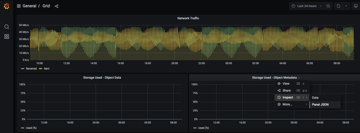

Dokumentationsänderungen beantragen
Dokumentationsänderungen beantragen In GitHub bearbeiten
In GitHub bearbeiten Leitfaden für Beitragende
Leitfaden für BeitragendeMit Prometheus und Grafana können Sie die Aufbewahrung Ihrer Kennzahlen erweitern
Beitragende
Dieser technische Bericht enthält detaillierte Anweisungen zur Konfiguration von NetApp StorageGRID 11.6 mit externen Services Prometheus und Grafana.
Einführung
StorageGRID speichert Kennzahlen mithilfe von Prometheus und visualisiert diese Kennzahlen über integrierte Grafana Dashboards. Die Kennzahlen von Prometheus können über StorageGRID sicher abgerufen werden, indem Client-Zugriffszertifikate konfiguriert und prometheus-Zugriff für den angegebenen Client ermöglicht wird. Derzeit wird die Aufbewahrung dieser metrischen Daten durch die Storage-Kapazität des Administrations-Nodes begrenzt. Um eine längere Dauer zu erreichen und individuelle Visualisierungen dieser Kennzahlen zu erstellen, werden wir einen neuen Prometheus- und Grafana-Server einsetzen, unseren neuen Server für die Scrape der Kennzahlen aus der StorageGRIDs-Instanz konfigurieren und ein Dashboard mit den für uns wichtigen Kennzahlen erstellen. Weitere Informationen zu den in der erfassten Prometheus-Kennzahlen finden Sie unter "StorageGRID-Dokumentation".
Föderate Prometheus
Labordetails
Für die Zwecke dieses Beispiels werde ich alle virtuellen Maschinen für StorageGRID 11.6 Knoten und einen Debian 11-Server verwenden. Die StorageGRID-Managementoberfläche ist mit einem öffentlich vertrauenswürdigen CA-Zertifikat konfiguriert. Dieses Beispiel wird die Installation und Konfiguration des StorageGRID-Systems oder der Debian linux-Installation nicht durchlaufen. Sie können jeden gewünschten Linux-Geschmack verwenden, der von Prometheus und Grafana unterstützt wird. Sowohl Prometheus als auch Grafana können als Docker-Container installiert, aus der Quelle erstellt oder vorkompilierte Binärdateien erstellt werden. In diesem Beispiel werde ich sowohl Prometheus- als auch Grafana-Binärdateien direkt auf dem gleichen Debian-Server installieren. Laden Sie sich die grundlegenden Installationsanweisungen von herunter https://prometheus.io Und https://grafana.com/grafana/ Jeweils.
Konfigurieren Sie StorageGRID für Prometheus Client-Zugriff
Um Zugriff auf gespeicherte prometheus-Kennzahlen zu StorageGRIDs zu erhalten, müssen Sie ein Clientzertifikat mit privatem Schlüssel generieren oder hochladen und die Berechtigung für den Client aktivieren. Die StorageGRID-Schnittstelle muss ein SSL-Zertifikat haben. Dieses Zertifikat muss vom prometheus-Server entweder von einer vertrauenswürdigen CA oder manuell vertrauenswürdig sein, wenn es selbst signiert ist. Weitere Informationen finden Sie auf der "StorageGRID-Dokumentation".
-
Wählen Sie in der StorageGRID-Managementoberfläche unten links die Option „KONFIGURATION“ und klicken Sie in der zweiten Spalte unter „Sicherheit“ auf Zertifikate.
-
Wählen Sie auf der Seite Zertifikate die Registerkarte „Client“ aus und klicken Sie auf die Schaltfläche „Add“.
-
Geben Sie einen Namen für den Client an, dem Zugriff gewährt wird, und verwenden Sie dieses Zertifikat. Klicken Sie auf das Feld unter „Berechtigungen“ vor „Prometheus zulassen“ und klicken Sie auf die Schaltfläche „Weiter“.

-
Wenn Sie ein CA-signiertes Zertifikat haben, können Sie das Optionsfeld für "Zertifikat hochladen" wählen, aber in unserem Fall werden wir StorageGRID das Client-Zertifikat generieren lassen, indem Sie das Optionsfeld für "Zertifikat generieren". Die Pflichtfelder werden angezeigt, in die ausgefüllt werden soll. Geben Sie den FQDN für den Client-Server, die IP des Servers, den Betreff und die gültigen Tage ein. Dann klicken Sie auf die Schaltfläche „Erzeugen“.


|
Be mindful of the certificate days valid entry as you will need to renew this certificate in both StorageGRID and the Prometheus server before it expires to maintain uninterrupted collection. |
-
Laden Sie die Pem-Datei des Zertifikats und die Pem-Datei des privaten Schlüssels herunter.

|
|
This is the only time you can download the private key, so make sure you do not skip this step. |
Bereiten Sie den Linux-Server für die Prometheus-Installation vor
Vor der Installation von Prometheus möchte ich meine Umgebung mit einem Prometheus-Benutzer, der Verzeichnisstruktur vorbereiten und die Kapazität für den Speicherort der Kennzahlen konfigurieren.
-
Erstellen Sie den Prometheus-Benutzer.
sudo useradd -M -r -s /bin/false Prometheus -
Erstellen Sie die Verzeichnisse für Prometheus, Clientzertifikat und Kennzahlendaten.
sudo mkdir /etc/Prometheus /etc/Prometheus/cert /var/lib/Prometheus -
Ich formatierte die Festplatte, die ich für die Aufbewahrung der Kennzahlen mit einem ext4 Dateisystem verwende.
mkfs -t ext4 /dev/sdb
-
Ich montierte dann das Dateisystem in das Prometheus-Kennzahlenverzeichnis.
sudo mount -t auto /dev/sdb /var/lib/prometheus/
-
Holen Sie die UUID der Festplatte, die Sie für Ihre Kennzahlendaten verwenden.
sudo ls -al /dev/disk/by-uuid/ lrwxrwxrwx 1 root root 9 Aug 18 17:02 9af2c5a3-bfc2-4ec1-85d9-ebab850bb4a1 -> ../../sdb
-
Hinzufügen eines Eintrags in /etc/fstab/ das Hinzufügen des Mount bei Neustarts mit der UUID von /dev/sdb.
/etc/fstab UUID=9af2c5a3-bfc2-4ec1-85d9-ebab850bb4a1 /var/lib/prometheus ext4 defaults 0 0
Installation und Konfiguration von Prometheus
Nachdem der Server nun bereit ist, kann ich die Prometheus-Installation starten und den Service konfigurieren.
-
Extrahieren Sie das Prometheus Installationspaket
tar xzf prometheus-2.38.0.linux-amd64.tar.gz -
Kopieren Sie die Binärdateien in /usr/local/bin, und ändern Sie das Eigentumsrecht in den zuvor erstellten prometheus-Benutzer
sudo cp prometheus-2.38.0.linux-amd64/{prometheus,promtool} /usr/local/bin sudo chown prometheus:prometheus /usr/local/bin/{prometheus,promtool} -
Kopieren Sie die Konsolen und Bibliotheken auf /etc/prometheus
sudo cp -r prometheus-2.38.0.linux-amd64/{consoles,console_libraries} /etc/prometheus/ -
Kopieren Sie das Clientzertifikat und die pem-Dateien mit privaten Schlüsseln, die zuvor von StorageGRID heruntergeladen wurden, in /etc/prometheus/certs
-
Erstellen Sie die yaml-Konfigurationsdatei für prometheus
sudo nano /etc/prometheus/prometheus.yml -
Geben Sie die folgende Konfiguration ein. Der Jobname kann alles sein, was Sie wünschen. Ändern Sie die „-Targets: [']“ in den FQDN des Admin-Knotens. Wenn Sie die Namen des Zertifikats und der Dateinamen des privaten Schlüssels geändert haben, aktualisieren Sie bitte den abschnitt tls_config, um mit dem Eintrag übereinstimmen. Speichern Sie anschließend die Datei. Wenn Ihre Grid-Management-Schnittstelle ein selbstsigniertes Zertifikat verwendet, laden Sie das Zertifikat herunter und legen Sie es mit dem Clientzertifikat mit einem eindeutigen Namen ab, und fügen Sie im Abschnitt tls_config Ca_file: /Etc/prometheus/cert/UICert.pem hinzu
-
In diesem Beispiel sammle ich alle Kennzahlen, die mit alertmanager, cassandra, Node und StorageGRID beginnen. Weitere Informationen zu den Prometheus-Kennzahlen finden Sie im "StorageGRID-Dokumentation".
# my global config global: scrape_interval: 60s # Set the scrape interval to every 15 seconds. Default is every 1 minute. scrape_configs: - job_name: 'StorageGRID' honor_labels: true scheme: https metrics_path: /federate scrape_interval: 60s scrape_timeout: 30s tls_config: cert_file: /etc/prometheus/cert/certificate.pem key_file: /etc/prometheus/cert/private_key.pem params: match[]: - '{__name__=~"alertmanager_.*|cassandra_.*|node_.*|storagegrid_.*"}' static_configs: - targets: ['sgdemo-rtp.netapp.com:9091']
-
|
|
Wenn Ihre Grid-Managementoberfläche ein selbstsigniertes Zertifikat verwendet, laden Sie das Zertifikat herunter, und legen Sie es mit dem Clientzertifikat mit einem eindeutigen Namen ab. Fügen Sie im Abschnitt tls_config das Zertifikat über dem Clientzertifikat und den privaten Schlüsselzeilen hinzu ca_file: /etc/prometheus/cert/UIcert.pem |
-
Ändern Sie das Eigentum aller Dateien und Verzeichnisse in /etc/prometheus und /var/lib/prometheus in den prometheus-Benutzer
sudo chown -R prometheus:prometheus /etc/prometheus/ sudo chown -R prometheus:prometheus /var/lib/prometheus/ -
Erstellen Sie eine prometheus-Servicedatei in /etc/systemd/System
sudo nano /etc/systemd/system/prometheus.service -
Fügen Sie die folgenden Zeilen ein, beachten Sie die --Storage.tsdb.Retention.time=1y, welche die Aufbewahrung der metrischen Daten auf 1 Jahr festlegt. Alternativ können Sie zur Basis-Aufbewahrung auf Storage-Beschränkungen --Storage.tsdb.Retention.size=300gib verwenden. Dies ist der einzige Speicherort, der die Aufbewahrung von Kennzahlen vornimmt.
[Unit] Description=Prometheus Time Series Collection and Processing Server Wants=network-online.target After=network-online.target [Service] User=prometheus Group=prometheus Type=simple ExecStart=/usr/local/bin/prometheus \ --config.file /etc/prometheus/prometheus.yml \ --storage.tsdb.path /var/lib/prometheus/ \ --storage.tsdb.retention.time=1y \ --web.console.templates=/etc/prometheus/consoles \ --web.console.libraries=/etc/prometheus/console_libraries [Install] WantedBy=multi-user.target -
Laden Sie den systemd-Dienst erneut, um den neuen prometheus-Service zu registrieren. Dann starten und aktivieren sie den prometheus Service.
sudo systemctl daemon-reload sudo systemctl start prometheus sudo systemctl enable prometheus -
Überprüfen Sie, ob der Service ordnungsgemäß läuft
sudo systemctl status prometheus● prometheus.service - Prometheus Time Series Collection and Processing Server Loaded: loaded (/etc/systemd/system/prometheus.service; enabled; vendor preset: enabled) Active: active (running) since Mon 2022-08-22 15:14:24 EDT; 2s ago Main PID: 6498 (prometheus) Tasks: 13 (limit: 28818) Memory: 107.7M CPU: 1.143s CGroup: /system.slice/prometheus.service └─6498 /usr/local/bin/prometheus --config.file /etc/prometheus/prometheus.yml --storage.tsdb.path /var/lib/prometheus/ --web.console.templates=/etc/prometheus/consoles --web.con> Aug 22 15:14:24 aj-deb-prom01 prometheus[6498]: ts=2022-08-22T19:14:24.510Z caller=head.go:544 level=info component=tsdb msg="Replaying WAL, this may take a while" Aug 22 15:14:24 aj-deb-prom01 prometheus[6498]: ts=2022-08-22T19:14:24.816Z caller=head.go:615 level=info component=tsdb msg="WAL segment loaded" segment=0 maxSegment=1 Aug 22 15:14:24 aj-deb-prom01 prometheus[6498]: ts=2022-08-22T19:14:24.816Z caller=head.go:615 level=info component=tsdb msg="WAL segment loaded" segment=1 maxSegment=1 Aug 22 15:14:24 aj-deb-prom01 prometheus[6498]: ts=2022-08-22T19:14:24.816Z caller=head.go:621 level=info component=tsdb msg="WAL replay completed" checkpoint_replay_duration=55.57µs wal_rep> Aug 22 15:14:24 aj-deb-prom01 prometheus[6498]: ts=2022-08-22T19:14:24.831Z caller=main.go:997 level=info fs_type=EXT4_SUPER_MAGIC Aug 22 15:14:24 aj-deb-prom01 prometheus[6498]: ts=2022-08-22T19:14:24.831Z caller=main.go:1000 level=info msg="TSDB started" Aug 22 15:14:24 aj-deb-prom01 prometheus[6498]: ts=2022-08-22T19:14:24.831Z caller=main.go:1181 level=info msg="Loading configuration file" filename=/etc/prometheus/prometheus.yml Aug 22 15:14:24 aj-deb-prom01 prometheus[6498]: ts=2022-08-22T19:14:24.832Z caller=main.go:1218 level=info msg="Completed loading of configuration file" filename=/etc/prometheus/prometheus.y> Aug 22 15:14:24 aj-deb-prom01 prometheus[6498]: ts=2022-08-22T19:14:24.832Z caller=main.go:961 level=info msg="Server is ready to receive web requests." Aug 22 15:14:24 aj-deb-prom01 prometheus[6498]: ts=2022-08-22T19:14:24.832Z caller=manager.go:941 level=info component="rule manager" msg="Starting rule manager..." -
Sie sollten nun in der Lage sein, auf die Benutzeroberfläche Ihres prometheus-Servers zu navigieren http://Prometheus-server:9090 Und siehe UI

-
Unter "Status" Targets sehen Sie den Status des StorageGRID Endpunkts, den wir in prometheus.yml konfiguriert haben


-
Auf der Seite Diagramm können Sie eine Testabfrage ausführen und überprüfen, ob die Daten erfolgreich abgefangen wurden. Geben Sie beispielsweise „storagegrid_Node_cpu_Utiltiy_percenty“ in die Abfrageleiste ein und klicken Sie auf die Schaltfläche Ausführen.

Installation und Konfiguration von Grafana
Nach der Installation und dem Betrieb von prometheus können wir nun zur Installation von Grafana und zur Konfiguration eines Dashboards wechseln
Grafana-Instalation
-
Installieren Sie die neueste Enterprise Edition von Grafana
sudo apt-get install -y apt-transport-https sudo apt-get install -y software-properties-common wget sudo wget -q -O /usr/share/keyrings/grafana.key https://packages.grafana.com/gpg.key -
Dieses Repository für stabile Versionen hinzufügen:
echo "deb [signed-by=/usr/share/keyrings/grafana.key] https://packages.grafana.com/enterprise/deb stable main" | sudo tee -a /etc/apt/sources.list.d/grafana.list -
Nachdem Sie das Repository hinzugefügt haben.
sudo apt-get update sudo apt-get install grafana-enterprise -
Laden Sie den systemd-Dienst neu, um den neuen grafana-Dienst zu registrieren. Starten und aktivieren Sie dann den Grafana-Service.
sudo systemctl daemon-reload sudo systemctl start grafana-server sudo systemctl enable grafana-server.service -
Grafana wird jetzt installiert und ausgeführt. Wenn Sie einen Browser zu HTTP://Prometheus-Server:3000 öffnen, werden Sie mit der Grafana-Anmeldeseite begrüßt.
-
Die Standard-Anmeldeinformationen sind admin/admin. Sie sollten ein neues Passwort festlegen, wenn Sie dazu aufgefordert werden.
Erstellen eines Grafana Dashboards für StorageGRID
Mit der Installation und dem Betrieb von Grafana und Prometheus ist es jetzt an der Zeit, beide zu verbinden. Dazu wird eine Datenquelle erstellt und ein Dashboard erstellt
-
Erweitern Sie im linken Fensterbereich „Konfiguration“ und wählen Sie „Datenquellen“, und klicken Sie dann auf die Schaltfläche „Datenquelle hinzufügen“
-
Prometheus wird eine der wichtigsten Datenquellen zur Auswahl sein. Wenn nicht, dann verwenden Sie die Suchleiste zu finden "Prometheus"
-
Konfigurieren Sie die Prometheus-Quelle, indem Sie die URL der prometheus-Instanz und das Scrape-Intervall eingeben, um das Prometheus-Intervall zu entsprechen. Ich habe auch den Abschnitt „Warnungen“ deaktiviert, da ich den Alarmmanager auf prometheus nicht konfiguriert habe.

-
Blättern Sie nach unten, und klicken Sie auf „Speichern & Testen“, wenn Sie die gewünschten Einstellungen eingegeben haben.
-
Nachdem der Konfigurationstest erfolgreich abgeschlossen wurde, klicken Sie auf die Schaltfläche Explore.
-
Im Erkundungs-Fenster können Sie die gleiche Metrik verwenden, die wir Prometheus mit „storagegrid_Node_cpu_Utifficienty_percenty“ getestet haben, und auf die Schaltfläche „Run query“ klicken

-
-
Nachdem die Datenquelle konfiguriert ist, können wir jetzt ein Dashboard erstellen.
-
Erweitern Sie im linken Fensterbereich „Dashboards“ und wählen Sie „+ neues Dashboard“ aus.
-
Wählen Sie „Neues Bedienfeld hinzufügen“ aus.
-
Konfigurieren Sie das neue Panel durch Auswahl einer Metrik, wieder werde ich "storagegrid_Node_cpu_Utilement_percenty" verwenden, einen Titel für das Panel eingeben, unten "Optionen" erweitern und für Legende ändern zu Custom und geben Sie "{{instance}}" ein, um die Knotennamen zu definieren, und im rechten Fensterbereich unter "Standardoptionen" setzen "Einheit" auf "Misc/Prozent(0-100)". Klicken Sie dann auf „Übernehmen“, um das Panel im Dashboard zu speichern.

-
-
Wir könnten unser Dashboard für jede gewünschte Metrik weiter ausbauen, aber glücklicherweise verfügt StorageGRID bereits über Dashboards mit Panels, die wir in unsere benutzerdefinierten Dashboards kopieren können.
-
Wählen Sie im linken Fensterbereich der StorageGRID-Managementoberfläche „Support“ und klicken Sie unten in der Spalte „Tools“ auf „Metriken“.
-
Innerhalb von Kennzahlen wähle ich den Link „Grid“ oben in der mittleren Spalte aus.

-
Wählen Sie im Grid-Dashboard den Bereich „Storage Used - Object Metadata“ aus. Klicken Sie auf den kleinen Pfeil nach unten und auf das Ende des Bedienfeldtitels, um ein Menü zu öffnen. Wählen Sie in diesem Menü „Inspect“ und „Panel JSON“ aus.

-
Kopieren Sie den JSON-Code und schließen Sie das Fenster.

-
Klicken Sie in unserem neuen Dashboard auf das Symbol, um ein neues Panel hinzuzufügen.

-
Wenden Sie das neue Bedienfeld an, ohne Änderungen vorzunehmen
-
Wie bei dem StorageGRID-Panel sollten Sie auch die JSON überprüfen. Entfernen Sie den gesamten JSON-Code, und ersetzen Sie ihn durch den kopierten Code aus dem StorageGRID-Fenster.

-
Bearbeiten Sie das neue Bedienfeld, und auf der rechten Seite sehen Sie eine Migrationsmeldung mit einem "Migrate"-Button. Klicken Sie auf die Schaltfläche und dann auf die Schaltfläche „Übernehmen“.


-
-
Sobald Sie alle Panels eingerichtet und so konfiguriert haben, wie Sie möchten. Speichern Sie das Dashboard, indem Sie oben rechts auf das Festplatten-Symbol klicken und Ihrem Dashboard einen Namen geben.
Schlussfolgerung
Jetzt verfügen wir über einen Prometheus Server mit anpassbarer Datenaufbewahrung und Storage-Kapazität. Damit können wir unsere eigenen Dashboards mit den für unsere Betriebsabläufe wichtigsten Kennzahlen weiterentwickeln. Weitere Informationen zu den in der erfassten Prometheus-Kennzahlen finden Sie unter "StorageGRID-Dokumentation".